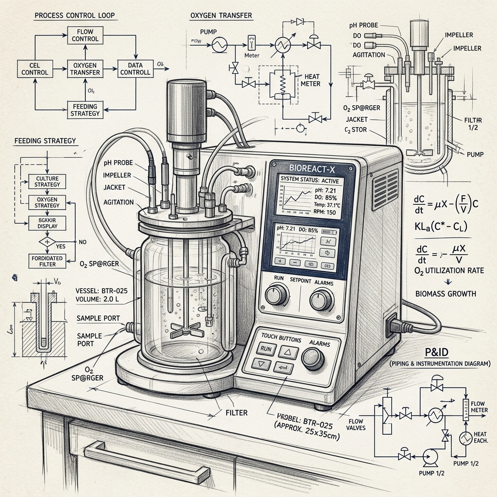

Hardware

Fundador
Juan José Rodríguez
Hardware Abierto para Biotecnología
Propuesta de Valor
Instrumentación biotecnológica de grado profesional a costos accesibles mediante diseño de código abierto, eliminando la barrera económica para la experimentación.
Detalles del Lean Canvas
- Problema: Alto costo de instrumentación científica que limita la enseñanza y experimentación biotecnológica.
- Segmentos de Cliente: Universidades, escuelas de ciencia, laboratorios de investigación pequeños y makers.
- Solución (MVP): Biorreactor de sobremesa operando con control automatizado de variables críticas (pH, gases, temperatura, agitación).
- Canales: GitHub, comunidades maker, ventas B2B con universidades, ferias científicas.
- Flujos de Ingreso: Venta de kits de hardware, soporte de calibración, piezas de repuesto personalizadas.
- Estructura de Costos: Componentes electrónicos, materiales de fabricación local (impresión 3D, acrílico), costos de distribución.
- Métricas Clave: Número de unidades en campo, precisión de control de variables críticas frente a estándares comerciales.
- Ventaja Injusta: Calibración validada exitosamente contra estándares de laboratorio comercial a una fracción de su precio.